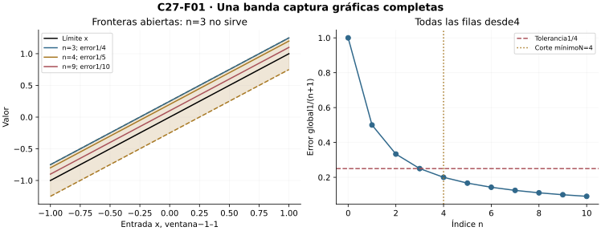
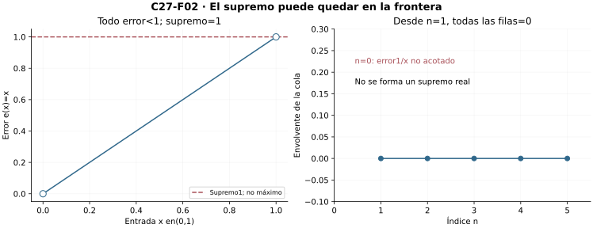
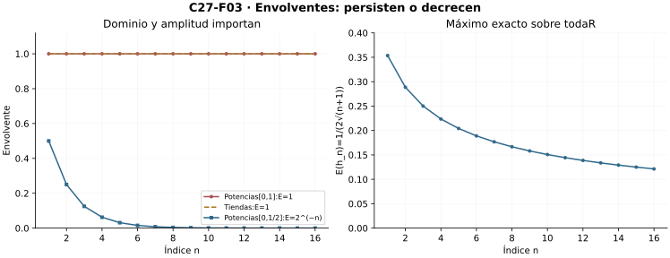
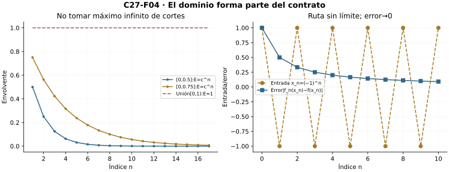
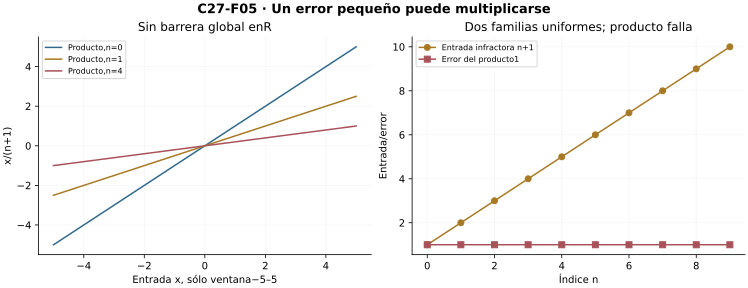
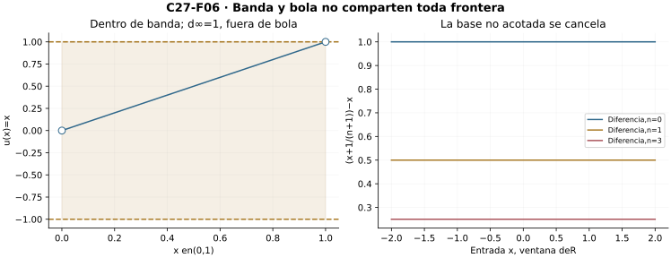
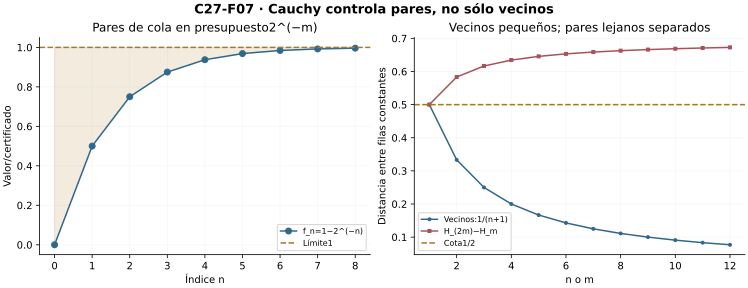
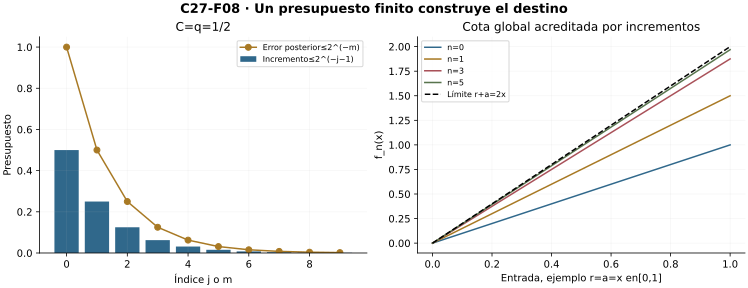

Capítulo 27 — Convergencia uniforme: controlar toda la función a la vez
Índice del libro · Ejercicios de este capítulo
La familia \(x/(n+1)\) permite esperar tanto como haga falta en una entrada fija y, sin embargo, conserva errores grandes en otras entradas de cada etapa. Para controlar una función completa exigiremos un solo corte para todo el dominio. El supremo medirá ese error cuando esté acotado, y el criterio de Cauchy permitirá construir un destino sin conocer su fórmula. Utilizaremos completitud de C03 y C10 y las herramientas de C14 para rutas dadas; los teoremas de intercambio se demostrarán después, en C28.
27.1. Una cola que sirve para todas las entradas
C26 mantuvo fija una entrada y construyó para ella una cola. Ahora recibimos una tolerancia y debemos entregar una sola cola que funcione en todas las entradas del dominio. Sea \(X\subseteq\mathbb R\), y sean \(f_n,f:X\to\mathbb R\) para \(n\in\mathbb N=\{0,1,\ldots\}\). Decimos que \(f_n\) converge uniformemente a \(f\) en \(X\) si \[ \forall\varepsilon>0\ \exists N\in\mathbb N\ \forall n\ge N\ \forall x\in X:\quad |f_n(x)-f(x)|<\varepsilon. \] Escribimos \(f_n\to f\) uniformemente en \(X\). La elección de \(N\) precede a la entrada que habrá que controlar. El dominio es parte del contrato; una misma fórmula puede cumplirlo en un dominio y fallarlo en otro.
Ver una banda y formular lo que significa
Para una tolerancia fija, la banda abierta \[ \{(x,y)\in X\times\mathbb R:f(x)-\varepsilon<y<f(x)+\varepsilon\} \] contiene las gráficas completas de todas las filas posteriores a \(N\). La anchura vertical es \(2\varepsilon\). No se afirma que la banda sea horizontal ni que el límite sea continuo: está definida alrededor de los valores de una función dada. El requisito es que ninguna entrada de ninguna fila de la cola salga de ella.
Por ejemplo, \(f_n(x)=x+1/(n+1)\) converge uniformemente a \(f(x)=x\) en toda \(\mathbb R\). Dada \(\varepsilon>0\), elegimos un natural \(N>1/\varepsilon\). Para todo \(n\ge N\) y todo \(x\), \[ |f_n(x)-f(x)|=\frac1{n+1}\le\frac1{N+1}<\varepsilon. \] El corte no depende de \(x\). Aunque las funciones no están acotadas en la recta, su diferencia sí tiene una barrera común. No se debe confundir acotación de los valores con acotación del error.
Comparar y negar los dos contratos
La convergencia uniforme implica la puntual: el corte que funciona en todas las entradas sirve en la entrada que fijemos. La unicidad del límite puntual de C26 da también unicidad uniforme. Si \(X\) es vacío, el contrato es vacuo y todas las filas y el límite son la única función vacía; no es necesario formar un supremo de una imagen vacía.
La negación hacia una candidata fija es \[ \exists\varepsilon_0>0\ \forall N\in\mathbb N\ \exists n\ge N\ \exists x\in X: |f_n(x)-f(x)|\ge\varepsilon_0. \] Ahora la entrada infractora puede cambiar con el corte y el índice. Para \(g_n(x)=x/(n+1)\) en \(\mathbb R\), C26 probó límite puntual cero. Con \(\varepsilon_0=1/2\), ante cualquier \(N\) tomamos \(n=N\) y \(x=N+1\): el error es1. Por tanto la convergencia no es uniforme en la recta.
En esta refutación, la fórmula \(n=N\), \(x=N+1\) proporciona los testigos ante cualquier corte propuesto. La negación del contrato sólo pide esas existencias. Si quisiéramos reunir infractores arbitrarios en una sucesión, tendríamos que justificar una regla de selección; aquí las rutas que usaremos están dadas explícitamente.

Ejercicios de la sección 27.1
Ejercicio 1. Banda sobre una función no acotada
Prueba uniformidad de \(f_n(x)=x+1/(n+1)\) hacia \(x\) en \(\mathbb R\) y explica qué está acotado.
Ver solución del ejercicio 1
La diferencia entre \(f_n(x)=x+1/(n+1)\) y la candidata \(f(x)=x\) es \(1/(n+1)\) para todas las entradas de la recta. Dada \(\varepsilon>0\), elegimos un natural \(N>1/\varepsilon\). Para todo \(n\ge N\) y todo \(x\in\mathbb R\), \(|f_n(x)-f(x)|=1/(n+1)\le1/(N+1)<\varepsilon\). El corte se eligió antes de examinar la entrada, así la convergencia es uniforme. Ninguna de esas funciones es acotada en la recta. Sus diferencias sí son funciones constantes acotadas, que es el control utilizado por el contrato.
Retorno visual. Véase C27-F01, después del argumento completo: la figura permite reconocer el mecanismo y no sustituye la prueba.
Ejercicio 2. Negación con testigo móvil
Refuta uniformidad hacia cero de \(g_n(x)=x/(n+1)\) en \(\mathbb R\), sin refutar su convergencia puntual.
Ver solución del ejercicio 2
Cada entrada fija tiene \(|g_n(x)|=|x|/(n+1)\to0\), con un corte \(N>|x|/\varepsilon\), así hay convergencia puntual a cero. Para refutar uniformidad, fijamos \(\varepsilon_0=1/2\). Ante cualquier corte \(N\), elegimos \(n=N\) y \(x=N+1\). El error es entonces \(|g_N(x)|=1\ge\varepsilon_0\). Se obtiene una infracción en cada cola con una entrada que puede depender del corte. Ésta es la negación uniforme y es compatible con el control de cada columna fija.
Ejercicio 3. Unicidad sin nueva selección
Demuestra que una familia tiene a lo sumo un límite uniforme en un dominio común, incluido el vacío.
Ver solución del ejercicio 3
Si \(f\) y \(g\) son límites uniformes, también son límites puntuales, porque cada corte simultáneo sirve para una entrada fijada. Para \(x\in X\), si \(d=|f(x)-g(x)|>0\), los cortes de ambos contratos con error \(d/3\) tienen un máximo \(N\). En ese índice, \(d\le|f(x)-f_N(x)|+|f_N(x)-g(x)|<2d/3\), contradicción. Así coinciden en cada entrada y son la misma función. Si \(X\) es vacío, hay una única función vacía y la conclusión vale directamente, sin elegir una entrada inexistente.
Ejercicio 4. Toda la cola, no una fila
En un dominio no vacío, toma filas constantes \(f_n=(-1)^n\). Explica por qué las filas pares no certifican convergencia uniforme.
Ver solución del ejercicio 4
Las filas de índice par son la función constante uno, así esa subsucesión converge uniformemente a uno con error cero. Las de índice impar son la función constante menos uno. Si toda la familia convergiera uniformemente, sería puntualmente convergente en cualquier entrada del dominio no vacío. Sus dos subsucesiones numéricas constantes deberían compartir el mismo límite, pero sus valores son distintos. Por tanto no hay límite uniforme de la familia completa. Un número infinito de filas favorables no asegura que todas las etapas posteriores al corte sean favorables.
Ejercicio 5. Cambiar el prefijo
Prueba que modificar un número finito de filas no altera una convergencia uniforme dada.
Ver solución del ejercicio 5
Sean \(f_n\to f\) uniformemente y \(g_n=f_n\) para todo \(n\ge M\). Ante \(\varepsilon>0\), el contrato original proporciona un corte \(N\) independiente de la entrada. Tomamos \(K=\max(N,M)\). Para \(n\ge K\) y toda entrada, \(|g_n(x)-f(x)|=|f_n(x)-f(x)|<\varepsilon\). Así la familia modificada tiene el mismo límite uniforme. Las filas del prefijo pueden cambiar de modo arbitrario, incluso perder acotación, siempre que sigan siendo funciones sobre el dominio común declarado.
27.2. La envolvente de error y sus fronteras
Para una fila \(n\) y candidata \(f\), definimos el conjunto de errores \[ A_n=\{|f_n(x)-f(x)|:x\in X\}. \] Si \(X\) es no vacío, este conjunto es no vacío y está formado por números no negativos. Antes de escribir un supremo real debemos comprobar que tiene una cota superior. Cuando la tiene, C03 permite definir \[ E_n=\sup A_n. \] Esta envolvente de error es una barrera, aunque ninguna entrada la alcance.
El criterio de las envolventes, con su dominio exacto
Proposición. Para \(X\ne\varnothing\), la convergencia uniforme equivale a que desde algún índice todos los \(A_n\) sean acotados y sus supremos reales \(E_n\) tiendan a cero. Se permite que unas pocas filas iniciales tengan error no acotado.
Si hay convergencia uniforme, aplicamos primero el contrato con tolerancia1. En la cola correspondiente todos los errores son menores que1, así existe cada \(E_n\). Para una precisión \(\varepsilon>0\), usamos ahora la tolerancia \(\varepsilon/2\) y reunimos ese corte con el primero. Entonces, en toda fila de la nueva cola, \[ 0\le E_n\le\varepsilon/2<\varepsilon. \] La primera desigualdad no requiere un máximo; la segunda se obtiene porque \(\varepsilon/2\) es cota superior de todos los errores de la fila.
Recíprocamente, si los \(E_n\) reales de una cola convergen a cero, un corte con \(E_n<\varepsilon\) da, para toda entrada, \[ |f_n(x)-f(x)|\le E_n<\varepsilon. \] Eso es el contrato uniforme. La prueba incluye todos los índices posteriores, no sólo una subsucesión de filas favorables.
Podemos adoptar para el vacío la convención \(E_n=0\) y conservar la equivalencia. Es una convención para el error de la función vacía; no se dice que el conjunto vacío tenga supremo real cero en el orden usual.
Estricto en cada entrada no es estricto en el supremo
En \(X=(0,1)\), el error \(e(x)=x\) es menor que uno en toda entrada, pero su supremo es uno. En efecto, uno es cota superior y cualquier \(c<1\) deja dentro del intervalo un punto mayor, por ejemplo \((1+\max(c,0))/2\). El supremo no tiene por qué conservar una desigualdad estricta válida en cada entrada. Por eso la prueba anterior pide error menor que \(\varepsilon/2\): al tomar el supremo queda una cota no estricta que todavía es menor que la tolerancia final \(\varepsilon\).
Tampoco se puede exigir que todos los errores iniciales sean acotados. En \(X=(0,1]\), definamos \(f_0(x)=1/x\) y \(f_n(x)=0\) para \(n\ge1\), con candidata cero. La convergencia es uniforme: sirve \(N=1\) para cualquier tolerancia. Pero la imagen de errores de la primera fila no tiene cota real. Suprimir el prefijo no altera una propiedad de cola.
Regiones de infracción
Para \(\eta>0\), sea \[ B_n(\eta)=\{x\in X:|f_n(x)-f(x)|\ge\eta\}. \] La convergencia uniforme dice que para cada \(\eta\) esos conjuntos son vacíos en toda una cola. La puntual dice que cada entrada deja de pertenecer a ellos eventualmente, con un corte que puede depender de ella. Todos los puntos pueden salir eventualmente sin que llegue una etapa en que el conjunto entero quede vacío. Las tiendas de C26 realizan exactamente esa posibilidad.

Ejercicios de la sección 27.2
Ejercicio 6. Supremo y frontera abierta
En \(X=(0,1)\) demuestra que todos los errores \(e(x)=x\) son menores que1 pero su supremo es1.
Ver solución del ejercicio 6
En \((0,1)\), todas las alturas \(e(x)=x\) satisfacen \(e(x)<1\), así uno es cota superior. Si \(c<1\), ponemos \(y=(1+\max(c,0))/2\). Esta entrada pertenece a \((0,1)\) y cumple \(y>c\), de modo que \(c\) no es cota superior. Por tanto \(\sup e(X)=1\). Como uno no pertenece al dominio, ningún valor alcanza ese supremo. La conclusión muestra que desigualdades estrictas en todas las entradas pueden producir sólo una desigualdad no estricta al tomar supremo.
Retorno visual. Véase C27-F02, después del argumento completo: la figura permite reconocer el mecanismo y no sustituye la prueba.
Ejercicio 7. Una fila sin envolvente real
En \((0,1]\), define \(f_0(x)=1/x\) y \(f_n=0\) para \(n\ge1\). Analiza uniformidad y existencia de envolventes.
Ver solución del ejercicio 7
La candidata es cero. Para cualquier tolerancia sirve \(N=1\), pues todas las filas posteriores son idénticamente cero en \((0,1]\). Hay por tanto convergencia uniforme. En la primera fila, dado \(B\ge0\), la entrada \(x=1/(B+1)\) pertenece al dominio y tiene error \(B+1>B\). Esa imagen de errores es no acotada y no tiene supremo real. Desde el índice uno las envolventes existen y valen cero. La caracterización de uniformidad utiliza envolventes reales de una cola y no exige que el prefijo también las posea.
Ejercicio 8. Acreditar el criterio
Demuestra que si las envolventes reales de una cola satisfacen \(E_n\to0\), hay convergencia uniforme.
Ver solución del ejercicio 8
Supongamos que desde un índice \(M\) existen envolventes reales \(E_n\) y que \(E_n\to0\). Para \(\varepsilon>0\), el límite numérico da un corte \(N\ge M\) con \(E_n<\varepsilon\) para todo \(n\ge N\). Como el supremo acota cada error, para toda entrada \(|f_n(x)-f(x)|\le E_n<\varepsilon\). El mismo corte controla todas las entradas y toda la cola, probando uniformidad. En el dominio vacío se usa la convención \(E_n=0\) y el contrato se satisface vacuamente.
Ejercicio 9. El margen al pasar al supremo
Prueba la dirección uniforme⇒envolventes de cola tendentes a cero, cuidando la desigualdad estricta.
Ver solución del ejercicio 9
Si \(X\ne\varnothing\), la uniformidad con tolerancia uno entrega una cola cuyas imágenes de error son no vacías y acotadas. Completitud define allí los supremos reales \(E_n\). Para \(\varepsilon>0\), usamos el contrato con tolerancia \(\varepsilon/2\) y reunimos su corte con el de existencia de las envolventes. Cada error posterior es menor que \(\varepsilon/2\), por lo que cada supremo es a lo sumo \(\varepsilon/2<\varepsilon\). Así \(E_n\to0\). El factor dos conserva un margen tras el paso al supremo. Para el vacío, las envolventes se declaran cero y cumplen directamente el límite.
Ejercicio 10. Regiones que nunca se vacían
Para las tiendas \(t_n\) de C26, analiza \(B_n(1/2)=\{x:t_n(x)\ge1/2\}\) y sus columnas.
Ver solución del ejercicio 10
Con \(k=n+3\), la condición \(t_n(x)\ge1/2\) equivale a \(1-|kx-2|\ge1/2\), es decir \(|kx-2|\le1/2\). Por tanto \(B_n(1/2)=[3/(2k),5/(2k)]\), un segmento no vacío contenido en \([0,1]\). Los extremos pertenecen porque la infracción incluye igualdad. La entrada cero queda fuera siempre. Para \(x>0\) fijo, desde un corte con \(n+3>3/x\) queda a la derecha de todo el soporte y no vuelve a pertenecer al conjunto infractor. Cada entrada sale eventualmente, pero ningún conjunto completo queda vacío. Ésa es la diferencia entre el contrato puntual y el uniforme en este ejemplo.
27.3. Calcular la peor discrepancia
Para calcular una envolvente debemos dar una cota válida en todas las entradas y mostrar que ninguna menor sirve. A veces la igualdad se realiza en una entrada; otras veces sólo podemos aproximarla. Los ejemplos siguientes separan ambas situaciones y muestran cómo cambia el resultado al restringir el dominio.
Potencias: una barrera que no se alcanza
Con \(p_0=1\), \(p_n(x)=x^n\) para \(n\ge1\) en \([0,1]\), C26 probó límite puntual \(p=0\) antes de1 y \(p(1)=1\). Para \(n\ge1\), el error en1 es0 y en toda entrada menor que1 es \(x^n<1\). No hay máximo de error, pero su supremo es1.
Para probar la última afirmación, sea \(0\le c<1\) una supuesta cota menor. Elegimos \(0<s<(1-c)/(n+1)\) y \(x=1-s\in[0,1)\). Bernoulli de C26 da \[ x^n\ge1-ns>c. \] Así \(c\) no es cota. Las cotas negativas tampoco lo son porque hay error0. La envolvente vale1 en todas las filas, incluido el prefijo \(p_0\), y no tiende a cero. En \([0,1)\) el límite es cero continuo, pero la misma envolvente1 impide convergencia uniforme.
En cambio, en \([0,c]\) con \(0<c<1\), la candidata es cero y el máximo de error es \(c^n\), alcanzado en \(c\). Con \(t=1/c-1>0\), Bernoulli da \(c^n\le1/(1+nt)\to0\). Sobre \([0,0]\), el error es cero desde \(n=1\). El dominio modifica la peor discrepancia.
Tiendas: máximo móvil
Para \(k=n+3\) y \(t_n(x)=\max(0,1-|kx-2|)\) en \([0,1]\), C26 probó límite puntual cero. La cota \(0\le t_n\le1\) se alcanza en \(x=2/k\), de modo que \(E_n=1\). Para las tiendas normalizadas \(b_n=k\,t_n\), el máximo de error es \(k\). Ambas familias fallan el contrato uniforme aunque sus columnas queden eventualmente en cero. Aquí la obstrucción es un máximo realizado, a diferencia de las potencias.
Un máximo decreciente en toda la recta
Para \(k=n+1\) y \[ h_n(x)=\frac{x}{1+kx^2},\qquad x\in\mathbb R, \] el límite puntual es cero. El cuadrado \((\sqrt{k}|x|-1)^2\ge0\) demuestra \(1+kx^2\ge2\sqrt{k}|x|\). En \(x\ne0\), dividir por denominadores positivos da \[ |h_n(x)|\le\frac1{2\sqrt{k}}. \] En cero se verifica directamente. La igualdad se alcanza en \(x=\pm1/\sqrt{k}\), por lo que \(E_n=1/(2\sqrt{k})\). Dada \(\varepsilon>0\), un natural \(N>1/(4\varepsilon^2)\) hace \(E_n<\varepsilon\) para todo \(n\ge N\). Tenemos convergencia uniforme en un dominio no acotado.
La cota en toda la recta procede del cuadrado no negativo y su exactitud, de los dos puntos de igualdad. Así queda justificado el supremo fuera de cualquier ventana elegida para dibujar. El ejemplo converge uniformemente sobre un dominio no acotado, mientras las potencias fallaban en un segmento: el tamaño del dominio, por sí solo, no decide la uniformidad.

Ejercicios de la sección 27.3
Ejercicio 11. Supremo sin máximo de las potencias
Calcula la envolvente del error respecto del límite puntual de las potencias en \([0,1]\) para \(n\ge1\).
Ver solución del ejercicio 11
Para \(n\ge1\), el error respecto del límite puntual es \(x^n\) si \(0\le x<1\) y cero en \(x=1\). Todos los errores son menores que uno, así uno es una cota superior que no se alcanza. Para probar optimalidad, si \(0\le c<1\) ponemos \(s=(1-c)/[2(n+1)]>0\) y \(x=1-s\in[0,1)\). Bernoulli da \(x^n\ge1-ns>c\), porque \(ns<(1-c)\). Una cota negativa ya falla ante un error cero. Por tanto \(E_n=1\) para cada \(n\ge1\), sin máximo, y esas envolventes refutan uniformidad.
Ejercicio 12. Una restricción con máximo
Para \(0<c<1\), calcula la envolvente de las potencias hacia cero en \([0,c]\) y un corte suficiente.
Ver solución del ejercicio 12
En \([0,c]\), con \(0<c<1\), el límite es cero y para \(n\ge1\) el orden de potencias no negativas da \(0\le x^n\le c^n\). La entrada \(c\) alcanza el último valor, así \(E_n=c^n\) es un máximo. Escribiendo \(t=1/c-1>0\), Bernoulli da \(c^n\le1/(1+nt)\). Un natural \(N>1/(\varepsilon t)\), reunido con el índice uno, garantiza error menor que \(\varepsilon\) en toda entrada y toda la cola. La convergencia es uniforme. Si se permite \(c=0\), la única columna es cero desde la etapa uno y se trata directamente.
Ejercicio 13. Un pico que sigue siendo grande
Calcula las envolventes de \(t_n\) y \((n+3)t_n\) en \([0,1]\) y refuta sus convergencias uniformes hacia cero.
Ver solución del ejercicio 13
Las tiendas satisfacen \(0\le t_n\le1\) y alcanzan uno en \(z_n=2/(n+3)\). Como su límite puntual es cero, su envolvente de error es \(E_n(t)=1\). Con \(k=n+3\), la tienda normalizada \(b_n=kt_n\) está entre cero y \(k\) y alcanza \(k\) en el mismo centro, así \(E_n(b)=k\). Para tolerancia \(1/2\), ante cualquier corte tomamos una etapa posterior y su centro, que sigue en \([0,1]\). Ambas familias infringen allí la tolerancia. Ninguna converge uniformemente hacia cero, aunque cada columna termine siendo exactamente cero.
Ejercicio 14. Un máximo global decreciente
Para \(h_n=x/[1+(n+1)x^2]\) en \(\mathbb R\), prueba el máximo exacto del error y uniformidad.
Ver solución del ejercicio 14
Escribimos \(k=n+1>0\). La desigualdad \((\sqrt{k}|x|-1)^2\ge0\) da \(1+kx^2\ge2\sqrt{k}|x|\). Para \(x\ne0\), dividir permite concluir \(|h_n(x)|\le1/(2\sqrt{k})\); en cero la magnitud es cero. En \(x=\pm1/\sqrt{k}\) el denominador vale dos y se alcanza esa cota, así \(E_n=1/(2\sqrt{n+1})\) es el máximo exacto en toda la recta. Para \(\varepsilon>0\), un natural \(N>1/(4\varepsilon^2)\) garantiza \(n+1>1/(4\varepsilon^2)\) cuando \(n\ge N\), y por tanto \(E_n<\varepsilon\). Queda probada uniformidad hacia cero sin restringir el dominio.
Retorno visual. Véase C27-F03, después del argumento completo: la figura permite reconocer el mecanismo y no sustituye la prueba.
Ejercicio 15. La amplitud reduce el error
Define \(v_n(x)=x^{n+1}/(n+1)\) en \([0,1]\). Calcula el máximo y demuestra uniformidad hacia cero.
Ver solución del ejercicio 15
Para \(0\le x\le1\), se tiene \(0\le x^{n+1}\le1\). Así \(|v_n(x)|\le1/(n+1)\) y la entrada uno alcanza la cota. Es el máximo y la envolvente de error respecto de cero. Un natural \(N>1/\varepsilon\) da \(1/(n+1)<\varepsilon\) para todos los índices posteriores, uniformemente en la entrada. En las potencias sin ese divisor el peor error permanece cerca de uno; aquí la amplitud decreciente controla también las entradas próximas al extremo.
27.4. Restringir el dominio y seguir rutas
Restringir el dominio conserva el corte uniforme, pues reduce las entradas que debemos controlar. Reunir dominios exige, en cambio, un corte que cubra todos sus miembros. La finitud hará posible tomar el máximo de los cortes; una unión infinita puede perder esa garantía.
Restringir y reunir finitamente
Si \(f_n\to f\) uniformemente en \(X\) y \(Y\subseteq X\), el mismo corte funciona en \(Y\). Cuando ambos conjuntos son no vacíos y las envolventes existen, la inclusión de imágenes de error da \(E_n(Y)\le E_n(X)\) por C02. La igualdad no está garantizada.
Si \(X=X_1\cup\cdots\cup X_m\) y hay convergencia uniforme de las restricciones hacia la misma candidata en cada pieza, para una tolerancia tomamos los \(m\) cortes y su máximo. Toda entrada de \(X\) pertenece a alguna pieza y queda controlada. Las piezas vacías no añaden obligaciones. No se exige que sean abiertas o cerradas: el argumento es finito y lógico.
Una unión infinita no admite automáticamente el mismo paso. En \(X=[0,1)\), sea \[ X_j=[0,c_j],\qquad c_j=1-\frac1{j+2},\quad j\in\mathbb N. \] Estas piezas cubren \(X\): para \(x<1\), la arquimedianidad permite \(1/(j+2)\le1-x\). Las potencias convergen uniformemente a cero en cada \(X_j\) por §27.3, pero no en su unión. Los cortes pueden crecer con la pieza y no tienen por qué tener una barrera común.
Un contrato que controla cualquier ruta dada
Supongamos convergencia uniforme y que está dada cualquier sucesión \(x_n\in X\). El mismo corte entrega \[ |f_n(x_n)-f(x_n)|\longrightarrow0. \] No necesitamos que las entradas converjan. A diferencia de C26, ahora pueden variar porque todas estaban incluidas en la obligación después del corte.
Si además \(x_n\to x\in X\) y \(f\) es continua en \(x\), la dirección secuencial directa de C14 da \(f(x_n)\to f(x)\). La desigualdad \[ |f_n(x_n)-f(x)| \le |f_n(x_n)-f(x_n)|+|f(x_n)-f(x)| \] prueba convergencia de la diagonal a \(f(x)\). Aquí continuidad del límite se declara como hipótesis; aún no la hemos deducido de continuidad de las filas. C28 estudiará esa preservación.
Una ruta explícita con errores que no desaparecen en índices arbitrariamente tardíos basta para refutar uniformidad. Las tiendas proporcionan \(x_n=2/(n+3)\) y error uno en todo índice. La ruta prueba la obstrucción sin tener que convertir una familia de existencias arbitrarias en una selección simultánea.
Reindexar y conservar una cola
Cambiar unas pocas filas iniciales no altera convergencia uniforme: se reúne el corte anterior con el final del prefijo modificado. Para una subsucesión de índices estrictamente crecientes \(n_j\), la inducción da \(n_j\ge j\), así el corte uniforme en \(n\) también funciona desde \(j\ge N\). Toda subsucesión converge uniformemente al mismo límite.
La conversa no vale con una sola subsucesión. Filas constantes \(f_n(x)=(-1)^n\) en un dominio no vacío tienen subsucesión par uniformemente igual a1, pero la familia completa no converge ni puntualmente. Capturar algunas filas no captura toda una cola.

Ejercicios de la sección 27.4
Ejercicio 16. Restricción con barrera común
Si hay convergencia uniforme en \(X\), demuestra uniformidad en cualquier \(Y\subseteq X\) y compara envolventes cuando existen.
Ver solución del ejercicio 16
Si \(Y\subseteq X\), el corte uniforme elegido en \(X\) sigue siendo válido para toda entrada de \(Y\), así las restricciones convergen uniformemente. Si ambos conjuntos son no vacíos y existen las envolventes de la fila examinada, la imagen de errores sobre \(Y\) está contenida en la de \(X\). Todo número que acote la segunda acota la primera, y la minimalidad del supremo da \(E_n(Y)\le E_n(X)\). Si \(Y\) es vacío, su error se declara cero y no hay obligaciones de entrada. La restricción puede reducir la envolvente y no obliga a conservarla exactamente.
Ejercicio 17. Reunión de dos contratos
Si \(X=A\cup B\) y las restricciones convergen uniformemente a la misma candidata, acredita el contrato en \(X\).
Ver solución del ejercicio 17
Para \(\varepsilon>0\), las restricciones a \(A\) y \(B\) proporcionan cortes \(N_A,N_B\). Tomamos \(N=\max(N_A,N_B)\). Si \(n\ge N\) y \(x\in X=A\cup B\), la entrada pertenece al menos a una de las piezas y el contrato de esa pieza da \(|f_n(x)-f(x)|<\varepsilon\). La misma candidata se usa en las dos restricciones, así no hay discrepancias en su intersección. El argumento incluye piezas vacías y no requiere condiciones topológicas: el máximo finito de cortes es el dato que une los contratos.
Ejercicio 18. Una unión infinita falla
Usa \(X_j=[0,1-1/(j+2)]\) para mostrar que uniformidad en cada pieza no implica uniformidad en la unión.
Ver solución del ejercicio 18
La pieza \(X_j\) tiene extremo \(c_j=1-1/(j+2)<1\), así las potencias convergen uniformemente a cero en ella con envolvente \(c_j^n\). Su unión es \([0,1)\): cada entrada \(x<1\) pertenece a alguna pieza porque puede elegirse \(j\) con \(1/(j+2)\le1-x\). Sobre la unión, para cada \(n\ge1\) el supremo del error es uno, mediante entradas arbitrariamente próximas al extremo ausente. Por tanto allí la convergencia no es uniforme. Los cortes de las piezas dependen de \(j\) y no tienen una barrera común que permita repetir el argumento de unión finita.
Retorno visual. Véase C27-F04, después del argumento completo: la figura permite reconocer el mecanismo y no sustituye la prueba.
Ejercicio 19. Una ruta cualquiera
Si \(f_n\to f\) uniformemente y está dada una ruta \(x_n\in X\), prueba \(|f_n(x_n)-f(x_n)|\to0\). ¿Se exige convergencia de la ruta?
Ver solución del ejercicio 19
La ruta \(x_n\in X\) está dada. Para \(\varepsilon>0\), el contrato uniforme proporciona \(N\) que sirve a todas las entradas de todas las filas posteriores. En particular, si \(n\ge N\) sirve en la entrada \(x_n\), y \(|f_n(x_n)-f(x_n)|<\varepsilon\). Esto prueba que el error diagonal tiende a cero sin exigir convergencia de la ruta. Para reemplazar el valor móvil \(f(x_n)\) por \(f(x)\) haría falta, por ejemplo, \(x_n\to x\in X\) y continuidad de \(f\) en ese destino; entonces una segunda aplicación de la triangular completa la comparación.
Ejercicio 20. Subsucesión y prefijo
Prueba transferencia uniforme a una subsucesión estrictamente creciente de índices y explica por qué la conversa con una sola subsucesión falla.
Ver solución del ejercicio 20
Sea \((n_j)\) una sucesión estrictamente creciente de naturales. La inducción da \(n_j\ge j\): el primer término es no negativo y cada siguiente es al menos una unidad mayor. Si \(N\) es un corte uniforme de la familia, entonces para \(j\ge N\) se tiene \(n_j\ge N\) y \(|f_{n_j}(x)-f(x)|<\varepsilon\) para toda entrada. Así la subsucesión hereda el límite uniforme. La conversa falla en las filas constantes \((-1)^n\) sobre un dominio no vacío: la subsucesión par es idénticamente uno, mientras la completa alterna y no tiene límite puntual ni uniforme.
27.5. Operar bajo un presupuesto común
Las estimaciones uniformes permiten reunir cortes sin volver a fijar una entrada. En sumas basta repartir el error; en productos y cocientes también debemos controlar los factores que multiplican ese error y separar los denominadores de cero. Las barreras necesarias han de valer en todo el dominio.
Reglas lineales y operaciones de proximidad
Si \(f_n\to f\) y \(g_n\to g\) uniformemente en \(X\), entonces \(\alpha f_n+\beta g_n\to\alpha f+\beta g\) uniformemente. Las cotas \[ |\alpha(f_n-f)+\beta(g_n-g)| \le|\alpha||f_n-f|+|\beta||g_n-g| \] valen entrada por entrada; pedimos errores menores que \(\varepsilon/[2(|\alpha|+1)]\) y \(\varepsilon/[2(|\beta|+1)]\) y reunimos dos cortes independientes de la entrada.
La triangular inversa prueba uniformidad de \(|f_n|\to|f|\). Para el máximo de dos valores usamos \[ \max(u,v)=\frac{u+v+|u-v|}{2}; \] las reglas anteriores dan \(\max(f_n,g_n)\to\max(f,g)\) uniformemente.
Más generalmente, si \(\phi:D\to\mathbb R\) cumple una cota Lipschitz común \(|\phi(u)-\phi(v)|\le L|u-v|\) y todos los valores de \(f_n,f\) están en \(D\), entonces \(\phi\circ f_n\to\phi\circ f\) uniformemente. La precisión \(\varepsilon/(L+1)\) para las entradas de \(\phi\) da el error requerido, incluido \(L=0\). El dominio y la constante común van antes de la composición.
Productos: declarar la barrera que se gasta
Supongamos además \(|f(x)|\le A\) y \(|g(x)|\le B\) en todo \(X\). Un corte uniforme para \(|f_n-f|<1\) da \(|f_n(x)|\le A+1\) en todas las entradas de la cola. Allí \[ |f_n(x)g_n(x)-f(x)g(x)| \le (A+1)|g_n(x)-g(x)|+B|f_n(x)-f(x)|. \] Usando errores menores que \(\varepsilon/[2(A+2)]\) y \(\varepsilon/[2(B+1)]\), y el corte de la barrera, obtenemos convergencia uniforme del producto.
El supuesto de valores acotados no puede eliminarse sin otro control. En \(\mathbb R\), \(f_n(x)=x\) converge uniformemente a \(x\) con error cero y \(g_n(x)=1/(n+1)\) converge uniformemente a cero. El producto \(x/(n+1)\) sólo converge puntualmente a cero, como §27.1 refutó. El error pequeño del segundo factor se multiplica por entradas sin barrera.
Tampoco continuidad de la operación exterior basta por sí sola en un dominio de valores no acotado. Las funciones \(x+1/(n+1)\) convergen uniformemente a \(x\), pero después de elevar al cuadrado el error es \[ \left|\frac{2x}{n+1}+\frac1{(n+1)^2}\right|, \] no acotado en \(\mathbb R\) para ninguna fila. En un rango \([-M,M]\) común, en cambio, \(|u^2-v^2|\le2M|u-v|\) certifica esa composición.
Recíprocos con margen común
Si \(|g(x)|\ge m>0\) en todo \(X\) y \(g_n\to g\) uniformemente, un corte para error menor que \(m/2\) da \(|g_n(x)|>m/2\) simultáneamente. Los recíprocos están definidos en toda esa cola y \[ \left|\frac1{g_n(x)}-\frac1{g(x)}\right| \le\frac{2|g_n(x)-g(x)|}{m^2}. \] La estimación prueba uniformidad de la cola de recíprocos. Para una familia definida desde el índice cero se requiere que las filas iniciales no tengan ceros o que se declare una reparación; la prueba sólo garantiza el dominio de la cola. Con numeradores uniformemente convergentes a una función acotada, el producto anterior da el cociente.

Ejercicios de la sección 27.5
Ejercicio 21. Álgebra con dos presupuestos
Prueba convergencia uniforme de \(\alpha f_n+\beta g_n\) cuando ambas familias convergen uniformemente.
Ver solución del ejercicio 21
Dada \(\varepsilon>0\), pedimos a las dos familias errores menores que \(\varepsilon/[2(|\alpha|+1)]\) y \(\varepsilon/[2(|\beta|+1)]\), respectivamente. Sus cortes uniformes tienen un máximo \(N\). En toda entrada de cualquier fila posterior, el error de la combinación es a lo sumo \(|\alpha||f_n-f|+|\beta||g_n-g|\le(\varepsilon/2)\big(|\alpha|/(|\alpha|+1)+|\beta|/(|\beta|+1)\big)<\varepsilon\). Los coeficientes nulos están incluidos porque los denominadores siguen positivos. Por tanto \(\alpha f_n+\beta g_n\) converge uniformemente a \(\alpha f+\beta g\).
Ejercicio 22. Producto con barreras declaradas
Demuestra uniformidad del producto cuando \(|f|\le A\), \(|g|\le B\) y hay uniformidad de las dos familias hacia esos límites.
Ver solución del ejercicio 22
Suponemos \(|f|\le A\) y \(|g|\le B\), con \(A,B\ge0\) globales. El corte uniforme para \(|f_n-f|<1\) da \(|f_n|\le A+1\) en toda entrada de la cola. La identidad \(f_ng_n-fg=f_n(g_n-g)+g(f_n-f)\) proporciona error a lo sumo \((A+1)|g_n-g|+B|f_n-f|\). Pedimos al error de \(g_n\) una cota \(\varepsilon/[2(A+2)]\) y al de \(f_n\) una cota \(\varepsilon/[2(B+1)]\), reuniendo sus cortes con el de la barrera. La suma resultante es menor que \(\varepsilon\). Todas las constantes son independientes de la entrada, así el producto converge uniformemente a \(fg\).
Ejercicio 23. Producto sin barrera
Construye dos familias uniformemente convergentes en \(\mathbb R\) cuyo producto no converge uniformemente al producto de límites.
Ver solución del ejercicio 23
En la recta, tomamos \(f_n(x)=x\) en toda etapa y \(g_n(x)=1/(n+1)\). La primera familia converge uniformemente a \(f(x)=x\) con error cero; la segunda converge uniformemente a \(g=0\) con error constante \(1/(n+1)\). El producto de filas es \(x/(n+1)\) y el producto de límites es cero. Ante cualquier corte \(N\), la entrada \(x=N+1\) de la fila \(n=N\) da error uno, refutando uniformidad con tolerancia \(1/2\). La magnitud del límite \(f(x)=x\) no tiene barrera global y el factor creciente amplifica el error pequeño del segundo.
Retorno visual. Véase C27-F05, después del argumento completo: la figura permite reconocer el mecanismo y no sustituye la prueba.
Ejercicio 24. Cuadrar una aproximación global
Analiza el cuadrado de \(f_n(x)=x+1/(n+1)\) en \(\mathbb R\) y explica qué control permitiría cuadrar.
Ver solución del ejercicio 24
La familia original tiene error global \(1/(n+1)\) respecto de la identidad. Al cuadrar, la diferencia es \((x+1/(n+1))^2-x^2=2x/(n+1)+1/(n+1)^2\). Para cada índice crece sin cota en magnitud al variar \(x\) por la recta. Un testigo explícito es \(x=n+1\), donde el error vale \(2+1/(n+1)^2>1\); por tanto no hay uniformidad hacia \(x^2\). Si los valores de filas y límite utilizados estuvieran todos en \([-M,M]\), se tendría \(|u^2-v^2|=|u-v||u+v|\le2M|u-v|\). Esa barrera convierte el cuadrado en una operación Lipschitz sobre el rango común y sí permite transportar uniformidad.
Ejercicio 25. Recíproco con margen
Si \(|g(x)|\ge m>0\) y \(g_n\to g\) uniformemente, prueba uniformidad de los recíprocos de la cola y declara su dominio.
Ver solución del ejercicio 25
El contrato uniforme para error \(m/2\) proporciona una cola en la que \(|g_n(x)|\ge|g(x)|-|g_n(x)-g(x)|>m/2\) para todas las entradas. Así los recíprocos de esa cola son funciones reales sobre el mismo \(X\). Allí \(|1/g_n-1/g|=|g_n-g|/(|g_n||g|)\le2|g_n-g|/m^2\). Para \(\varepsilon>0\), reunimos el corte de dominio con el corte uniforme para error original menor que \(\varepsilon m^2/2\). El error recíproco es entonces menor que \(\varepsilon\). Las filas iniciales pueden tener ceros; para hablar de una familia desde el índice cero deben revisarse o reemplazarse explícitamente por funciones definidas, sin alterar esta cola.
27.6. Una distancia entre funciones acotadas
La envolvente puede medir la distancia entre dos funciones completas si su diferencia tiene magnitud acotada. Para que la fórmula dé siempre un número real, comenzaremos con el conjunto de funciones acotadas. Después veremos cómo extender la misma construcción a funciones que comparten una base no acotada.
Construir el espacio y la norma
Sea \[ \mathcal B(X)=\{u:X\to\mathbb R:\exists B\ge0\ \forall x\in X,\ |u(x)|\le B\}. \] Es un subconjunto de la colección de funciones de C26. Sumas y múltiplos permanecen en él por \(|u+v|\le B_u+B_v\) y \(|\alpha u|\le|\alpha|B_u\). La función cero pertenece a él.
Para \(X\ne\varnothing\), la imagen de \(|u|\) es no vacía y acotada; C03 da \[ \|u\|_\infty=\sup_{x\in X}|u(x)|. \] Para \(X=\varnothing\) definimos \(\|u\|_\infty=0\). Verifiquemos las propiedades, sin suponer máximos inexistentes.
La norma es no negativa. Si vale cero, cada \(|u(x)|\le0\), luego \(u\) es cero; la conversa es inmediata. Para una constante \(\alpha\ne0\), multiplicar todas las cotas por \(|\alpha|\) y dividirlas de vuelta prueba \[ \|\alpha u\|_\infty=|\alpha|\,\|u\|_\infty. \] Más explícitamente, \(|\alpha|\|u\|_\infty\) es cota de los valores de \(|\alpha u|\), y cualquier cota de éstos, dividida por \(|\alpha|\), acota los de \(|u|\). Para \(\alpha=0\) la igualdad se comprueba aparte.
Finalmente, \[ |u(x)+v(x)|\le\|u\|_\infty+\|v\|_\infty \] para todo \(x\), de modo que el miembro derecho es cota superior y \[ \|u+v\|_\infty\le\|u\|_\infty+\|v\|_\infty. \] Estas propiedades también valen para el vacío, donde sólo hay una función.
La distancia suprema
Definimos \[ d_\infty(u,v)=\|u-v\|_\infty. \] Es finita porque \(u-v\) es acotada; es no negativa, simétrica y vale cero exactamente cuando \(u=v\). Como \(u-w=(u-v)+(v-w)\), la desigualdad de norma prueba \[ d_\infty(u,w)\le d_\infty(u,v)+d_\infty(v,w). \] Estas son las propiedades de una distancia. La teoría general de espacios métricos llegará en C30; aquí la distancia ha sido construida y verificada en un caso concreto.
Converger para esta distancia significa \(d_\infty(f_n,f)\to0\). Cuando todos los objetos pertenecen a \(\mathcal B(X)\), §27.2 demuestra que equivale al contrato uniforme. La bola de radio \(r>0\) está dada por \(d_\infty(u,v)<r\): todas las diferencias de valores son menores que \(r\). La conversa para un radio fijo puede fallar si todos los errores son menores que \(r\) pero su supremo es \(r\). Las bandas y las bolas dan el mismo modo de convergencia al permitir precisiones menores, no siempre el mismo conjunto para una frontera estricta fija.
Funciones no acotadas y clases de diferencia acotada
No obtenemos una distancia real en la colección de todas las funciones poniendo el mismo símbolo. En \(X=\mathbb R\), la diferencia entre \(u(x)=x\) y cero no tiene cota superior de magnitud, así no tiene un supremo real. Tampoco el vacío se resuelve fingiendo un supremo que no existe.
Sin embargo, fijada una función cualquiera \(f_0\), la clase \[ f_0+\mathcal B(X)=\{f_0+u:u\in\mathcal B(X)\} \] sí tiene diferencias acotadas: entre dos miembros se cancela \(f_0\). La misma fórmula define una distancia allí. Esto explica por qué \(x+1/(n+1)\) puede converger uniformemente a \(x\) aunque ninguna función pertenezca a \(\mathcal B(\mathbb R)\). No se necesita asignar distancia finita a pares cuyo error no está acotado.

Ejercicios de la sección 27.6
Ejercicio 26. Norma y salida cero
Prueba que \(\|u\|_\infty=0\) en \(\mathcal B(X)\) si y sólo si \(u\) es la función cero, incluido \(X\) vacío.
Ver solución del ejercicio 26
Si \(X\ne\varnothing\), cada \(|u(x)|\) está entre cero y su supremo \(\|u\|_\infty\). Si la norma es cero, todas esas magnitudes son cero, así \(u\) coincide con la función nula. Recíprocamente, para la función nula la imagen de magnitudes es \(\{0\}\) y su supremo es cero. En el dominio vacío se declaró norma cero para la única función, que también es la función nula vacía. Así la equivalencia vale en ambos casos, manteniendo separada la convención del vacío de la existencia de un supremo real.
Ejercicio 27. Homogeneidad sin máximos
Demuestra \(\|\alpha u\|_\infty=|\alpha|\|u\|_\infty\) sin suponer que la norma se alcance.
Ver solución del ejercicio 27
Supongamos \(X\ne\varnothing\) y \(\alpha\ne0\). El número \(|\alpha|\|u\|_\infty\) acota todas las magnitudes \(|\alpha u(x)|\). Si \(C\) es cualquier cota superior de éstas, dividir por \(|\alpha|>0\) da una cota \(C/|\alpha|\) para todas las magnitudes de \(u\). La minimalidad de su supremo implica \(|\alpha|\|u\|_\infty\le C\). Por tanto ese número es exactamente \(\|\alpha u\|_\infty\). Si \(\alpha=0\), ambos lados valen cero directamente. Si \(X\) es vacío, ambas normas se definieron cero y la igualdad también es inmediata. No se usó un punto que alcanzara la norma.
Ejercicio 28. Distancia triangular
Verifica la desigualdad triangular de \(d_\infty(u,v)=\|u-v\|_\infty\) para funciones acotadas.
Ver solución del ejercicio 28
Las diferencias de funciones acotadas siguen acotadas, así las tres distancias existen. Para cada entrada, \(|u(x)-w(x)|\le|u(x)-v(x)|+|v(x)-w(x)|\le d_\infty(u,v)+d_\infty(v,w)\). El último real es por tanto una cota superior de toda la imagen de magnitudes de \(u-w\). Tomar su supremo da \(d_\infty(u,w)\le d_\infty(u,v)+d_\infty(v,w)\). La conclusión usa cotas universales y no necesita máximos alcanzados. En el vacío, todas las distancias son cero por convención.
Ejercicio 29. Banda y bola de frontera estricta
En \(X=(0,1)\), compara la banda de radio1 entre \(u(x)=x\) y cero con la bola \(d_\infty(u,0)<1\).
Ver solución del ejercicio 29
Para \(u(x)=x\) en \((0,1)\), cada entrada satisface \(|u(x)-0|=x<1\). Por tanto la gráfica queda dentro de la banda abierta entre menos uno y uno alrededor de la función cero. Sin embargo el supremo de las magnitudes es uno, así \(d_\infty(u,0)=1\). La condición de bola estricta pide una distancia menor que uno y no se cumple. El error nunca alcanza la frontera, pero se aproxima a ella sin un margen común positivo. Al probar equivalencias de convergencia, usar tolerancia \(\varepsilon/2\) evita este problema de frontera.
Retorno visual. Véase C27-F06, después del argumento completo: la figura permite reconocer el mecanismo y no sustituye la prueba.
Ejercicio 30. Clase trasladada
En \(\mathbb R\) explica por qué la distancia suprema no es real entre \(x\) y0, pero sí entre \(x+u\) y \(x+v\) para \(u,v\) acotadas.
Ver solución del ejercicio 30
La diferencia entre la identidad \(r(x)=x\) y cero tiene magnitud \(|x|\), no acotada en la recta. Por tanto no tiene supremo real y \(d_\infty(r,0)\) no es una distancia real definida en esta teoría. Si \(u,v\) son acotadas, en cambio, \((r+u)-(r+v)=u-v\) tiene una barrera global dada por la suma de sus cotas. Su norma existe y define la distancia entre esas dos traslaciones. La clase \(r+\mathcal B(\mathbb R)\) permite medir diferencias acotadas con una base común no acotada; no extiende la distancia real a todos los pares arbitrarios de funciones.
27.7. Cauchy uniforme y completitud
En C10, controlar todos los pares tardíos de una sucesión real permitió construir un límite sin conocerlo de antemano. Para funciones pediremos que ese mismo corte controle los pares en cualquier entrada. La completitud real resolverá cada columna; la parte decisiva será comprobar que los límites obtenidos conservan el corte común.
El criterio uniforme de Cauchy
Una familia dada es uniformemente de Cauchy en \(X\) si \[ \forall\varepsilon>0\ \exists N\in\mathbb N\ \forall m,n\ge N\ \forall x\in X:\quad |f_n(x)-f_m(x)|<\varepsilon. \] Teorema. Para funciones reales en un dominio común, este contrato equivale a la existencia de una función \(f:X\to\mathbb R\) hacia la que la familia converge uniformemente.
En la ida, un corte de convergencia con tolerancia \(\varepsilon/3\) controla dos errores. Para \(m,n\) posteriores y cualquier \(x\), \[ |f_n(x)-f_m(x)| \le |f_n(x)-f(x)|+|f(x)-f_m(x)| <2\varepsilon/3<\varepsilon. \] Esta dirección no usa completitud.
En la vuelta, fijamos una entrada \(x\). El contrato uniforme hace de Cauchy su columna numérica, y C10 proporciona un único límite real. Como esto vale para cada entrada, el grafo de las salidas únicas construye una función \(f:X\to\mathbb R\), según C26. Falta demostrar que la aproximación a esa función es uniforme; la existencia columna por columna todavía no lo dice.
Fijemos ahora \(\varepsilon>0\) y recibamos un único corte \(N\) del contrato de Cauchy con tolerancia \(\varepsilon/3\). Para cualquier \(n\ge N\) y cualquier \(x\), todos los índices \(m\ge N\) cumplen \[ |f_n(x)-f_m(x)|<\varepsilon/3. \] Mantenemos fijos \(n\) y \(x\) y hacemos tender \(m\) a infinito. El álgebra numérica, continuidad del absoluto y preservación del orden de C26 dan \[ |f_n(x)-f(x)|\le\varepsilon/3<\varepsilon. \] La desigualdad después del límite es no estricta y tiene ese sentido, no el inverso. Como el corte se eligió antes de \(n\) y \(x\), el resultado vale para toda la cola y todo el dominio. Hemos probado uniformidad, no sólo puntualidad.
En el vacío la función única resuelve el teorema vacuamente. Ninguna parte de la vuelta requiere continuidad de las filas, un dominio compacto o una fórmula explícita del límite.
Completitud de las funciones acotadas
Para una sucesión en \(\mathcal B(X)\), el criterio de Cauchy para \(d_\infty\) equivale al contrato anterior. Una distancia menor que \(\varepsilon\) controla cada entrada. En sentido inverso, usar el contrato con \(\varepsilon/2\) da supremo como máximo \(\varepsilon/2<\varepsilon\). Otra vez se cuida la frontera del supremo.
Sea una sucesión de Cauchy en esa distancia. El teorema produce un límite uniforme real \(f\). Falta probar que permanece en \(\mathcal B(X)\). El contrato de Cauchy con tolerancia1 da un corte \(N\). Para cualquier \(x\), los valores posteriores satisfacen \(|f_m(x)-f_N(x)|<1\); al pasar al límite, \[ |f(x)|\le |f_N(x)|+1\le\|f_N\|_\infty+1. \] Así \(f\) es acotada. §27.2 da \(d_\infty(f_n,f)\to0\). Hemos demostrado completitud secuencial: toda sucesión de Cauchy para esta distancia tiene límite dentro del espacio. La existencia del destino procede de la completitud de \(\mathbb R\) en cada columna, y el control común lo conserva dentro del conjunto de funciones acotadas.
Dos precauciones antes de reutilizar
Cauchy puntual no basta: las tiendas de C26 tienen columnas convergentes, pero no son uniformemente de Cauchy, pues de serlo el teorema las haría uniformemente convergentes al único límite puntual cero, contra §27.3.
Controlar sólo vecinos tampoco basta. Para filas constantes \(q_n(x)=H_n\), donde \(H_0=0\) y \(H_n=\sum_{j=1}^n1/j\), las diferencias de vecinos son \(1/(n+1)\to0\) en todas las entradas. Pero entre etapas \(m\) y \(2m\), \[ H_{2m}-H_m=\sum_{j=m+1}^{2m}\frac1j\ge\frac12. \] Para un dominio no vacío, ante cualquier corte elegimos un entero \(m\ge\max(N,1)\) y obtenemos dos filas tardías separadas. El contrato exige todos los pares, no sólo los consecutivos.

Ejercicios de la sección 27.7
Ejercicio 31. De destino a pares
Prueba que convergencia uniforme implica el contrato uniforme de Cauchy e identifica el uso de completitud.
Ver solución del ejercicio 31
Dada \(\varepsilon>0\), la convergencia uniforme a \(f\) entrega un corte \(N\) para error \(\varepsilon/3\). Para todo \(m,n\ge N\) y toda entrada, la triangular da \(|f_n(x)-f_m(x)|\le|f_n(x)-f(x)|+|f(x)-f_m(x)|<2\varepsilon/3<\varepsilon\). Éste es el contrato uniforme de Cauchy, con dos índices posteriores al mismo corte. La función destino ya existe por hipótesis. La prueba sólo reúne errores mediante la triangular y no usa completitud para construir ningún valor nuevo.
Ejercicio 32. Construir primero el límite
Desde Cauchy uniforme, demuestra existencia de un límite uniforme sin conocer su fórmula.
Ver solución del ejercicio 32
Cauchy uniforme implica Cauchy numérico en cada entrada fija. C10 proporciona un límite real único por columna y esas salidas forman una función \(f:X\to\mathbb R\). Para demostrar uniformidad, fijamos \(\varepsilon>0\) y elegimos un corte común \(N\) de Cauchy para error \(\varepsilon/3\). Fijados \(n\ge N\) y \(x\), para todo \(m\ge N\) tenemos \(|f_n(x)-f_m(x)|<\varepsilon/3\). Al llevar \(m\) al límite, la continuidad del absoluto y la preservación del orden dan \(|f_n(x)-f(x)|\le\varepsilon/3<\varepsilon\). El corte precedía a \(n\) y a \(x\), así controla todas las filas y entradas requeridas. En el vacío se obtiene directamente la función vacía.
Ejercicio 33. Conservar el destino en funciones acotadas
Prueba completitud secuencial de \(\mathcal B(X)\) para la distancia suprema.
Ver solución del ejercicio 33
Una sucesión de Cauchy en \(d_\infty\) cumple el contrato uniforme de Cauchy porque cada error de entrada está acotado por esa distancia. El criterio anterior construye un límite uniforme real \(f\). Falta comprobar que permanece en \(\mathcal B(X)\). Usamos Cauchy con tolerancia uno y fijamos la fila de referencia \(f_N\). Para todos los índices \(m\ge N\) y todas las entradas, \(|f_m(x)-f_N(x)|<1\). Pasar \(m\) al límite da \(|f(x)-f_N(x)|\le1\), luego \(|f(x)|\le\|f_N\|_\infty+1\). Así \(f\) es acotada. La caracterización por envolventes convierte después el contrato uniforme en \(d_\infty(f_n,f)\to0\). Queda probada completitud secuencial, con el vacío incluido por sus convenciones.
Ejercicio 34. Vecinos cada vez más próximos
Para filas constantes \(H_n=\sum_{j=1}^n1/j\), \(H_0=0\), prueba que diferencias de vecinos tendentes a cero no bastan para Cauchy uniforme.
Ver solución del ejercicio 34
Sobre un dominio no vacío, cada \(H_n\) es una función constante y \(d_\infty(H_{n+1},H_n)=1/(n+1)\to0\). Pero para \(m\ge1\), \(H_{2m}-H_m=\sum_{j=m+1}^{2m}1/j\ge m/(2m)=1/2\). Ante cualquier corte \(N\), tomamos \(m\ge\max(N,1)\); ambos índices \(m,2m\) quedan en la cola y en cualquier entrada su diferencia es al menos \(1/2\). La tolerancia \(1/2\) refuta el error estricto pedido por Cauchy uniforme. Los incrementos vecinos pequeños no controlan la acumulación de muchos incrementos entre etapas lejanas. En un dominio vacío todas las filas serían la misma función, así ese caso no sería un contraejemplo.
Retorno visual. Véase C27-F07, después del argumento completo: la figura permite reconocer el mecanismo y no sustituye la prueba.
Ejercicio 35. La completitud tiene un lugar
Explica qué pasos del criterio uniforme de Cauchy gastan completitud y cuáles sólo usan orden y cortes.
Ver solución del ejercicio 35
La dirección de convergencia uniforme a Cauchy sólo usa el destino dado, la triangular y un corte común. En la dirección inversa, la completitud de los reales interviene al aplicar C10 para obtener el límite de cada columna de Cauchy. La unicidad de esas salidas construye el grafo de una función. Para recuperar uniformidad se mantiene fijo un índice y una entrada y se lleva la otra columna al límite: continuidad del absoluto y orden conservan una cota no estricta, cuyo margen \(\varepsilon/3\) basta para el contrato. Si se trabaja en \(\mathcal B(X)\), una fila acotada de referencia aporta después la barrera del destino. Ningún paso exige compacidad del dominio ni continuidad de las filas.
27.8. Certificar una aproximación completa
Podemos aplicar el criterio de Cauchy cuando conocemos cuánto cambia una etapa respecto de la siguiente. Las diferencias vecinas sólo serán suficientes si su acumulación entre dos índices tardíos admite una barrera que desaparezca. Un presupuesto geométrico permite demostrarlo mediante sumas finitas y obtener después una cota de error hacia el destino construido.
Sumar sólo un presupuesto finito de incrementos
Supongamos que hay constantes \(C\ge0\) y \(0<q<1\) con \[ |f_{j+1}(x)-f_j(x)|\le Cq^j \quad\text{para todo }j\in\mathbb N,\ x\in X. \] Si \(n>m\), telescopar incrementos y aplicar la triangular da \[ |f_n(x)-f_m(x)| \le C\sum_{j=m}^{n-1}q^j =Cq^m\frac{1-q^{n-m}}{1-q} \le\frac{Cq^m}{1-q}. \] La identidad geométrica es finita y se verifica multiplicando la suma por \(1-q\); no se usa teoría de series de funciones. Para \(m>n\) intercambiamos los índices y para \(m=n\) la diferencia es cero. Como \(q^m\to0\) por C06, un corte independiente de la entrada hace esta barrera menor que cualquier tolerancia. La familia es uniformemente de Cauchy y §27.7 produce un límite uniforme \(f\).
Manteniendo fijo \(m\) y pasando \(n\) al límite en la cota, obtenemos el certificado posterior \[ |f(x)-f_m(x)|\le\frac{Cq^m}{1-q} \quad\text{para toda }x. \] Si \(C=0\) todas las filas coinciden. Si se desea permitir \(q=0\), se define la cota de incremento inicial como \(C\) y las posteriores como cero; desde la etapa1 la familia es constante. No se deja un \(0^0\) ambiguo dentro de un presupuesto.
Si la fila inicial está acotada, telescopar desde ella da \(|f_n(x)|\le\|f_0\|_\infty+C/(1-q)\) y el límite pertenece a \(\mathcal B(X)\). Si no lo está, las diferencias \(f_n-f_0\) sí están acotadas por la misma constante: la familia y el límite viven en la clase \(f_0+\mathcal B(X)\). La acotación del destino se concluye sólo en el caso que la acredita.
Como ejemplo, con cualquier \(a\) acotada por1 y cualquier función base \(r\), la familia \[ f_n(x)=r(x)+(1-2^{-n})a(x) \] tiene incremento \(2^{-(n+1)}a(x)\), por lo que sirve \(C=1/2\) y \(q=1/2\). El certificado de error es \(2^{-n}\) y el límite explícito es \(r+a\). La construcción funciona aunque \(r\) no sea acotada.
Hipótesis que parecen suficientes y no lo son
Columnas monótonas y límite continuo no garantizan uniformidad sin otros datos. En \([0,1]\), sea \[ s_n(x)=\mathbf1_{(0,\,1/(n+1))}(x). \] La columna de cero siempre vale0. Cada entrada positiva queda fuera del intervalo eventualmente, y los intervalos se encogen: \(s_{n+1}(x)\le s_n(x)\) para toda entrada. El límite puntual es cero, continuo. Sin embargo, en \(x_n=1/[2(n+1)]\) todas las filas valen1 y sus envolventes son1. La convergencia no es uniforme. Las filas son discontinuas; no se puede importar un teorema sobre continuidad y monotonía omitiendo esa hipótesis.
Tampoco ser uniformemente convergente significa tener valores conjuntamente acotados si las filas son no acotadas, como mostró la traslación de \(x\). Si las filas sí pertenecen a \(\mathcal B(X)\), uniformidad da límite acotado y una barrera común de toda la familia: la cola se controla por una fila de referencia y el límite, y los supremos de las filas iniciales finitas se reúnen por un máximo. Cada premisa desempeña un papel.
Volver a mirar el contrato
Una cota común del error basta para acreditar uniformidad, aunque no sea el supremo exacto. Para refutarla, una tolerancia fija y testigos tardíos dentro del dominio bastan. El uso de una distancia exige declarar primero dónde las diferencias están acotadas; la construcción desde Cauchy exige además mantener el corte común al pasar al límite en cada columna.
La uniformidad controla valores completos, pero el ejemplo de las derivadas de \(x/(1+kx^2)\) mostró que ese control por sí solo no autoriza a derivar el límite. La continuidad, la integración y la diferenciación impondrán obligaciones diferentes al intentar transportar este modo de aproximación.

Ejercicios de la sección 27.8
Ejercicio 36. Presupuesto geométrico finito
Si \(|f_{j+1}(x)-f_j(x)|\le Cq^j\) con \(0<q<1\), prueba Cauchy uniforme y una cota del error posterior.
Ver solución del ejercicio 36
Suponemos \(C\ge0\) y \(0<q<1\). Para \(n>m\), telescopía y triangular dan \(|f_n(x)-f_m(x)|\le\sum_{j=m}^{n-1}|f_{j+1}(x)-f_j(x)|\le C\sum_{j=m}^{n-1}q^j=Cq^m(1-q^{n-m})/(1-q)\le Cq^m/(1-q)\). La suma utilizada es finita. Para \(m>n\) se intercambian los índices, y para igualdad el error es cero. Como \(q^j\to0\), un corte común del menor índice hace la cota menor que cualquier tolerancia, demostrando Cauchy uniforme. Su criterio produce \(f\). Fijados \(m,x\), pasar \(n\) al límite conserva \(|f(x)-f_m(x)|\le Cq^m/(1-q)\), un certificado válido en todo el dominio. Si \(C=0\), las filas coinciden y se verifica directamente.
Ejercicio 37. Destino acotado o diferencia acotada
Bajo el presupuesto geométrico, compara el caso de una fila inicial acotada con el de una base arbitraria.
Ver solución del ejercicio 37
El presupuesto telescópico desde la etapa cero da \(|f_n(x)-f_0(x)|\le C/(1-q)\) para todos los índices y entradas. Tras construir el límite, el mismo paso numérico conserva \(|f(x)-f_0(x)|\le C/(1-q)\). Si \(f_0\) es acotada, sumar su barrera da \(|f_n|,|f|\le\|f_0\|_\infty+C/(1-q)\) y todos pertenecen a \(\mathcal B(X)\). Si la base es arbitraria, sólo se garantiza que cada diferencia respecto de ella es acotada, así las funciones viven en \(f_0+\mathcal B(X)\). Por ejemplo una base identidad en la recta puede conservar su crecimiento no acotado aunque las correcciones converjan uniformemente.
Ejercicio 38. Un presupuesto que se alcanza
Con \(|a|\le1\) y base arbitraria \(r\), estudia \(f_n=r+(1-2^{-n})a\) y calcula una cota uniforme de error.
Ver solución del ejercicio 38
La familia está definida sobre un dominio común, con \(|a(x)|\le1\) y base \(r\) arbitraria. Su incremento es \(f_{n+1}-f_n=2^{-n-1}a\), de magnitud a lo sumo \((1/2)(1/2)^n\). El presupuesto geométrico tiene por tanto \(C=q=1/2\) y certifica error a lo sumo \(2^{-n}\). La cuenta directa identifica el destino \(f=r+a\), pues \(f_n-f=-2^{-n}a\). Así la convergencia es uniforme con la misma cota. En dominio no vacío la envolvente exacta es \(2^{-n}\sup|a|\); si ese supremo es uno, la barrera \(2^{-n}\) es exacta, alcanzada sólo cuando alguna magnitud de \(a\) alcance uno. La base puede ser no acotada porque se cancela en la diferencia.
Retorno visual. Véase C27-F08, después del argumento completo: la figura permite reconocer el mecanismo y no sustituye la prueba.
Ejercicio 39. Monotonía con límite continuo
En \([0,1]\), analiza \(s_n=\mathbf1_{(0,1/(n+1))}\): monotonía, límite, continuidad de éste y uniformidad.
Ver solución del ejercicio 39
Los intervalos \((0,1/(n+1))\) se encogen, así \(s_{n+1}(x)\le s_n(x)\) para toda entrada. En cero todas las alturas son cero. Para \(x>0\) fijo, desde un corte con \(n+1>1/x\) la entrada queda fuera del intervalo positivo y la columna es cero. El límite puntual es la función cero, continua. Sin embargo \(x_n=1/[2(n+1)]\) pertenece al intervalo de la fila \(n\) y tiene error uno respecto de ese límite. Con tolerancia \(1/2\) ninguna cola es uniforme. Las filas tienen discontinuidades en sus bordes de salto, incluida la discontinuidad relativa en cero; ese dato impide omitir la regularidad de las filas en cualquier comparación con teoremas adicionales.
Ejercicio 40. Una auditoría de condiciones
Reúne los datos que se necesitan para afirmar uniformidad, usar la distancia suprema y comparar una diagonal con el valor límite en su destino.
Ver solución del ejercicio 40
Para afirmar uniformidad se necesitan un dominio común, una candidata y, para cada tolerancia, un corte que controle toda entrada en toda fila posterior. Una barrera universal de error que tienda a cero proporciona ese certificado. Para usar una distancia suprema real hay que demostrar que las diferencias medidas están acotadas y tratar el vacío por su convención; esto vale en \(\mathcal B(X)\) o en una clase trasladada con base común. Para una ruta dada, uniformidad controla \(f_n(x_n)-f(x_n)\) sin pedir convergencia de las entradas. Si se quiere comparar con \(f(x)\), se añade \(x_n\to x\in X\) y continuidad del límite en ese centro, o un control equivalente que justifique \(f(x_n)\to f(x)\). Estos datos identifican exactamente qué error queda protegido en cada conclusión.